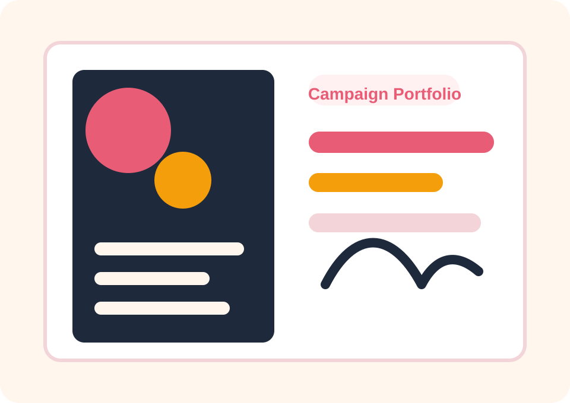

Mình hiện là sinh viên lớp MAC 6B, Trường Quản trị và Kinh doanh, ngành Marketing và Truyền thông. Sinh viên quan tâm đến marketing số, truyền thông thương hiệu, hành vi người tiêu dùng và ứng dụng AI trong sáng tạo nội dung.
MAC 6B / Marketing & Truyền thông
Portfolio
Hành trình rèn luyện kỹ năng số trong Marketing và Truyền thông
Lê Thị Hải Yến
MSSV 25080214
Trường Quản trị và Kinh doanh
Portfolio này tổng hợp quá trình thực hiện 6 bài tập học phần, thể hiện năng lực quản lý tài liệu số, tìm kiếm thông tin, viết prompt, hợp tác trực tuyến, sáng tạo nội dung với AI và sử dụng AI có trách nhiệm. Nội dung được định hướng theo marketing số, truyền thông thương hiệu và sáng tạo nội dung trong môi trường số.
Digital Marketing
AI Content
Branding
Communication

Profile Snapshot
Góc nhìn học tập theo ngành Marketing
Phần giới thiệu được trình bày như một bản brief ngắn: bối cảnh học tập, mục tiêu, lý do xây dựng portfolio và nhóm kỹ năng muốn phát triển.
Rèn luyện kỹ năng sử dụng công cụ số trong học tập, biết quản lý tài liệu, tìm kiếm và đánh giá thông tin, khai thác AI tạo sinh, làm việc nhóm trực tuyến và hình thành nhận thức đúng về trách nhiệm học thuật.
Portfolio giúp hệ thống hóa kết quả học tập, lưu trữ minh chứng thực hành và thể hiện quá trình phát triển kỹ năng số qua từng bài tập trong ngành truyền thông.
Quản lý tài liệu, nghiên cứu thị trường, đánh giá nguồn thông tin, viết prompt, lập kế hoạch nội dung, thiết kế infographic, cộng tác trực tuyến và dùng AI có trách nhiệm.
Campaign Index
6 case học tập và tài liệu minh chứng
Mỗi bài được trình bày như một case study ngắn, có mục tiêu, kết quả, insight học tập và liên kết PDF.
File Management
Quản lý tệp và thư mục để tạo quy trình lưu trữ tài nguyên học tập, brief, file thiết kế và dữ liệu truyền thông.
Research & Evaluation
Tìm kiếm và đánh giá nguồn về AI trong cá nhân hóa marketing số và hành vi người tiêu dùng.
Prompt Engineering
Thử nghiệm prompt từ cơ bản đến nâng cao để kiểm soát chất lượng đầu ra của AI trong học tập và nội dung.
Online Collaboration
Quản lý dự án nhóm bằng Trello, Google Docs, Google Drive và Zalo theo logic timeline truyền thông.
AI Content Creation
Featured campaign: cẩm nang/infographic “Trải nghiệm Văn hóa Cà phê Đặc sản Việt Nam”, kết hợp ChatGPT, Gemini và Canva Magic Design.
Responsible AI
Tìm hiểu nguyên tắc minh bạch, kiểm chứng, tránh đạo văn và trung thực học thuật khi dùng AI.
Reflection / Learning Outcomes
Tổng kết quá trình học tập
Các kết quả được nhìn lại theo định hướng marketing số, truyền thông thương hiệu và sáng tạo nội dung có trách nhiệm.
Đã học được
Quản lý tài liệu số, tìm kiếm và đánh giá thông tin, viết prompt, cộng tác trực tuyến, sáng tạo nội dung bằng AI và sử dụng AI có trách nhiệm.
Kỹ năng cải thiện
Tổ chức tài liệu, nghiên cứu học thuật, phân tích nguồn tin, lập kế hoạch nội dung, thiết kế infographic và làm việc nhóm.
Khó khăn
Chọn nguồn tin đáng tin cậy, viết prompt rõ, chuyển đầu ra AI thành nội dung tự nhiên và kiểm chứng dữ liệu.
Cách khắc phục
Chia nhỏ nhiệm vụ, đối chiếu nhiều nguồn, tự chỉnh sửa nội dung, bổ sung dữ liệu thực tế và tổ chức file có hệ thống.
Định hướng
Ứng dụng vào nghiên cứu thị trường, xây dựng chiến dịch truyền thông, sáng tạo nội dung số và dùng AI hỗ trợ marketing có trách nhiệm.